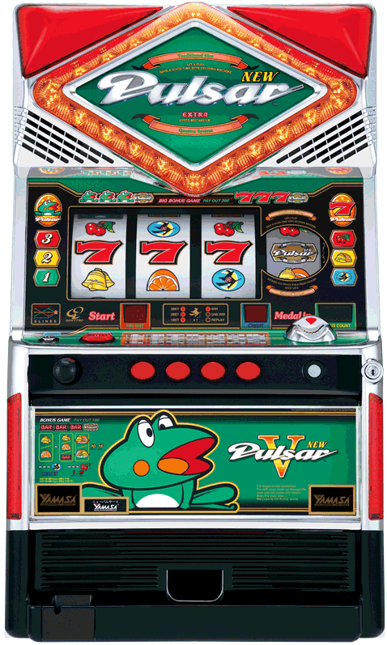

10 |
ニューパルサーＶ説明 |
 |
本ゲームに収録されている 「ニューパルサーＶ」の機種説明です。
爆発的な人気で全国に22万台が設置されたニューパルサー。大量リーチ目とカエルのキャラクターが多くのファンの支持を受け、パチスロの方向性を変えた先駆者的機種です。多くのファンに親しまれています。
ニューパルサーといえばリーチ目。完全再現を謳うからには、リーチ目を100％再現できなければ成り立ちません。新基準では、これまでと同じ絵柄配列、同じ出目は再現できないという避けられない事実があり、開発段階では「リーチ目の完全再現」は不可能という現実に直面しました。試行錯誤の末、不可能を可能にしたのは第４のリール。「４リール・４ストップ」システムが不可能とされた「絵柄配列・リーチ目・チャンス目」の完全再現を可能にしました。
「ニューパルサー」のゲーム性を支えているのは、1,000を超える大量リーチ目。「ニューパルサーＶ」では、「ボーナス一直線型」「右下チェリー付き７」「山型・谷型・Ｌ字型」はもちろん「チェリー付対角」もリーチ目として再現されています。また、第４のリールが加わったことにより、新たなゲーム性も生まれました。４ｔｈリールの停止絵柄によっては、通常出目からリーチ目へと変わることもあり、最後のリールを止めるまで「ニューパルサー」の魅力は持続します。
|
 |
 |
 |